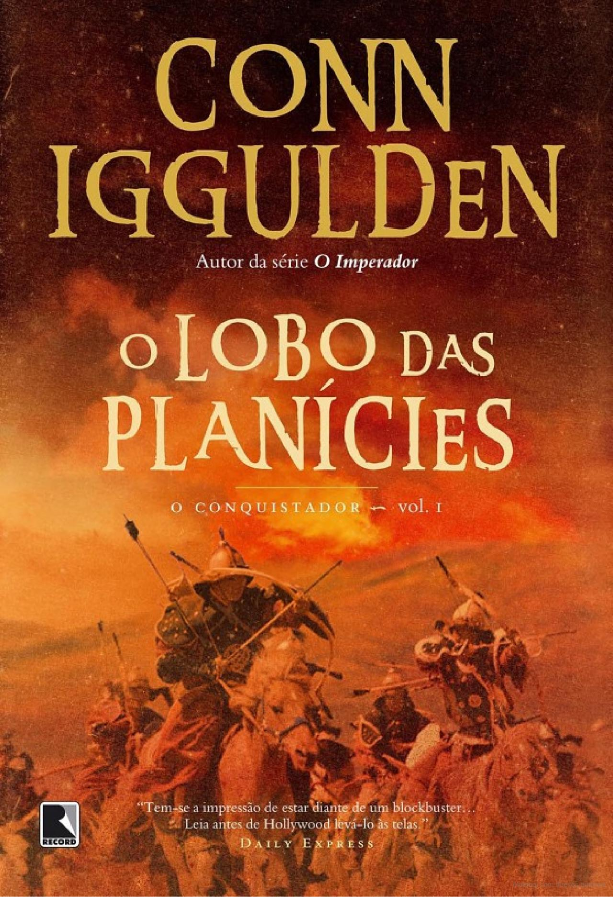
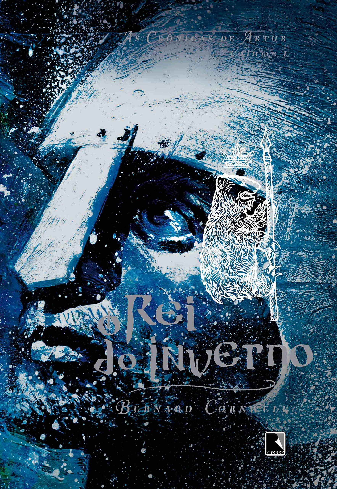
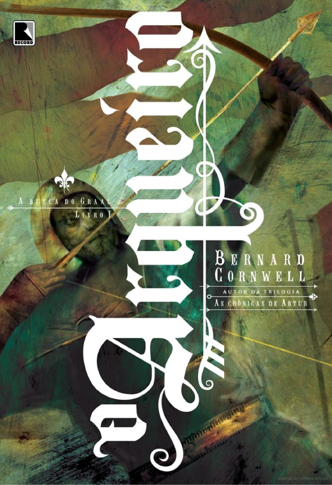

Estante de livros
Sua biblioteca a um clique de distância
O senhor dos anéis: a sociedade do anel - vol. 01

Sinopse
O volume inicial de O Senhor dos Anéis, lançado originalmente em julho de 1954, foi o primeiro grande
épico de fantasia moderno, conquistando milhões de leitores e se tornando o padrão de referência para
todas as outras obras do gênero até hoje.
A imaginação prodigiosa de J.R.R. Tolkien e seu conhecimento profundo das antigas mitologias da Europa
permitiram que ele criasse um universo tão complexo e convincente quanto o mundo real.
A Sociedade do Anel começa no Condado, a região rural do oeste da Terra-média onde vivem os diminutos e
pacatos hobbits. Bilbo Bolseiro, um dos raros aventureiros desse povo, cujas peripécias foram contadas em O
Hobbit, resolve ir embora do Condado e deixa sua considerável herança nas mãos de seu jovem parente Frodo.
O mais importante legado de Bilbo é o anel mágico que costumava usar para se tornar invisível.
No entanto, o mago Gandalf, companheiro de aventuras do velho hobbit, revela a Frodo que o objeto é o Um
Anel, a raiz do poder demoníaco de Sauron, o Senhor Sombrio, que deseja escravizar todos os povos da
Terra-média. A única maneira de eliminar a ameaça de Sauron é destruir o Um Anel nas entranhas da própria
montanha de fogo onde foi forjado.
A revelação faz com que Frodo e seus companheiros hobbits Sam, Merry e Pippin deixem a segurança do Condado
e iniciem uma perigosa jornada rumo ao leste. Ao lado de representantes dos outros Povos Livres que resistem
ao Senhor Sombrio, eles formam a Sociedade do Anel.
Alguém uma vez disse que o mundo dos leitores de língua inglesa se divide entre os que já leram O Senhor dos
Anéis e os que um dia lerão o livro. Com esta nova tradução da obra, o fascínio dessa aventura atemporal
ficará ainda mais evidente para os leitores brasileiros, tanto os que já conhecem a saga como os que estão
prestes a descobrir seu encanto.
Fonte:
Google books
| Data de publicação |
Autor |
Idioma |
Gênero(s) |
| 1 janeiro 2000 |
J. R. R. Tolkien |
Português |
Fantasia Épica |
O conquistador: o lobo das planícies - vol. 01

Sinopse
Primeiro livro da série O Consquistador, O lobo das planícies, é a reconstrução da saga de Gêngis Khan e
seus
descendentes.
Depois de mergulhar no universo da Antiga Roma com a série O Imperador, Conn Iggulden - grande revelação da
ficção histórica britânica - é o guia de uma empolgante viagem pelas conquistas de Genghis Khan e seus
descendentes.
O grande líder mongol ganha vida e substância pelo talento de Iggulden, numa nova coleção chamada O
conquistador.
O primeiro volume, O lobo das planícies, acompanha a infância de Temujin até se tornar o jovem comandante
que
deixaria seu nome na História.
Temujin, segundo filho do chefe dos lobos, tinha apenas onze anos quando seu pai morreu numa emboscada.
A família foi expulsa da tribo e deixada sozinha, sem comida nem abrigo, para morrer de fome nas duras
planícies
da Mongólia.
Foi uma dura introdução a um súbito mundo adulto, mas Temujin sobreviveu, aprendendo a combater ameaças
naturais
e humanas.
Em pouco tempo, um pequeno exército de desgarrados se une a Temujin, marcando o início de uma nova
identidade
tribal.
Enfrentando todos os perigos, o jovem líder chega à conclusão que mudaria toda a História: o maior inimigo
era a
divisão causada por séculos de guerra entre as tribos.
Para unir seu povo, em breve Temujin iria se tornar o Gêngis Khan.
O lobo das planícies traz vívidas descrições de lutas e estratégias de guerra, misturadas com cenas da vida
comum à época.
Mesclando ficção e acurada pesquisa histórica, Iggulden consegue criar uma trama repleta de reviravoltas e
coberta de emoção.
"Tem-se a impressão de estar diante de um blockbuster...
Leia antes de Hollywood levá-lo às telas."
― Daily Express
Fonte:
Google books
| Data de publicação |
Autor |
Idioma |
Gênero(s) |
| 23 junho 2008 |
Conn Iggulden |
Português |
Ficção histórica |
Crônicas do rei Artur: o rei do inverno - vol. 01

Sinopse
O rei do inverno conta a mais fiel história do lendário guerreiro Artur, que entrou para a história com
o
título de rei, embora nunca tenha usado uma coroa. A partir de fatos, este romance genial retrata o
maior de
todos os heróis como um poderoso guerreiro britânico, que luta contra os saxões para manter unida a
Britânia, no século V, após a saída dos romanos. O valoroso soldado cresce dentro do exército do rei e
dentro da narrativa de BernardCornwell até se tornar o melhor amigo e conselheiro na paz e na guerra.
Nesta
versão da lenda, Artur - filho bastardo do rei Uther Pendragon - penhora sua fidelidade e proteção para
Mordred, herdeiro legítimo do trono.
Numa Bretanha habitada por cristãos e druidas, dividida entre
diferentes senhores feudais e seus respectivos interesses e ameaçada pela invasão dos saxões, Artur
emerge
como um poderoso e corajoso guerreiro capaz de inspirar lealdade e unir o país com sua personalidade
complexa, impelida por honra, dever e paixão. Cornwell resgata curiosidades dos confrontos no início da
era
cristã, como o ritual do xingamento. Os comandantes dos exércitos rivais esquentavam o ânimo para a
batalha
se encontrando no meio do campo e trocando insultos.
O rei do inverno é o primeiro volume da trilogia As crônicas de Artur, finalizada em O inimigo de Deus e
Excalibur, do escritor inglês Bernard Cornwell. Um dos mais importantes autores britânicos da
atualidade,
Cornwell já foi traduzido para mais de dezesseis línguas e seus romances alcançaram rapidamente o topo
das
listas de mais vendidos: foram mais de 30 milhões de exemplares em todo mundo. A chave de seu sucesso
está
na criteriosa pesquisa histórica e na narrativa envolvente com a qual Cornwell disseca a vida de seus
personagens.
Fonte:
Google books
| Data de publicação |
Autor |
Idioma |
Gênero(s) |
| 14 novembro 2001 |
Bernard Cornwell |
Português |
Romance histórico, Ficção histórica |
O imperador: os portões de Roma - vol. 01
Sinopse
Em sua estreia na literatura, Conn Iggulden captura a essência de uma terra, um povo, uma lenda. Os portões
de Roma retrata a fascinante Roma Antiga, um reino de tiranos e escravos, de sórdidas intrigas e paixões
avassaladoras. Dois jovens são criados como irmãos durante o colapso da república e ascensão do lendário
Júlio César. Um é filho de um poderoso senador, nascido com grande privilégio e ambição.
O outro é seu irmão adotivo, um bastardo de grande força e esperteza, cujo amor pela família adotiva e,
principalmente, pelo
irmão, será a força motriz de sua vida. Conforme os caminhos dos dois se separam e o desejo por uma bela
escrava se interpõe entre eles, Gaius e Marcus conhecerão amor, perda e violência. E a terra que tanto amam
mergulha em um conflito civil que colocará romanos contra romanos e a amizade dos dois em xeque.
Fonte:
Google books
| Data de publicação |
Autor |
Idioma |
Gênero(s) |
| 15 de dezembro de 2017 |
Conn Iggulden |
Português |
Ficção histórica, Romance histórico, História alternativa, Romance biográfico |
A busca do Graal: o arqueiro - vol. 01

Sinopse
Uma fábula sobre guerra e heroísmo que encanta do início ao fim.
Depois de dar vida ao Rei Artur, um dos mais interessantes personagens da Idade Média britânica, na
trilogia
Crônicas de Artur (O rei do inverno, O inimigo de Deus e Excalibur) ― sucesso de público e crítica ―, o
inglês Bernard Cornwell volta à ficção histórica. O arqueiro, primeiro volume de mais uma série, traz
como
cenário a Guerra dos Cem Anos, um conflito dinástico iniciado em 1337, com Eduardo III reivindicando a
coroa
da França, e que terminou com a tomada de Bordeaux pelos franceses, em 19 de outubro de 1453.
As tramas, os homens e as histórias por trás da luta pela coroa francesa confirmam Cornwell como um dos
principais
escritores históricos da atualidade. O arqueiro acompanha a trajetória de Thomas, um jovem arqueiro
inglês,
no conflito que opôs a França dos Valois à Inglaterra dos Plantagenetas ― e depois dos Lancastre. Aos 18
anos apenas, ele vê seu pai morrer em seus braços após um ataque de surpresa à aldeia de Hookton. Um
lugar
simples que escondia um grande segredo: a lança usada por São Jorge para matar o dragão, uma das maiores
relíquias da cristandade.
Fonte:
Google books
| Data de publicação |
Autor |
Idioma |
Gênero(s) |
| 26 fevereiro 2003 |
Bernard Cornwell |
Português |
Ficção histórica |